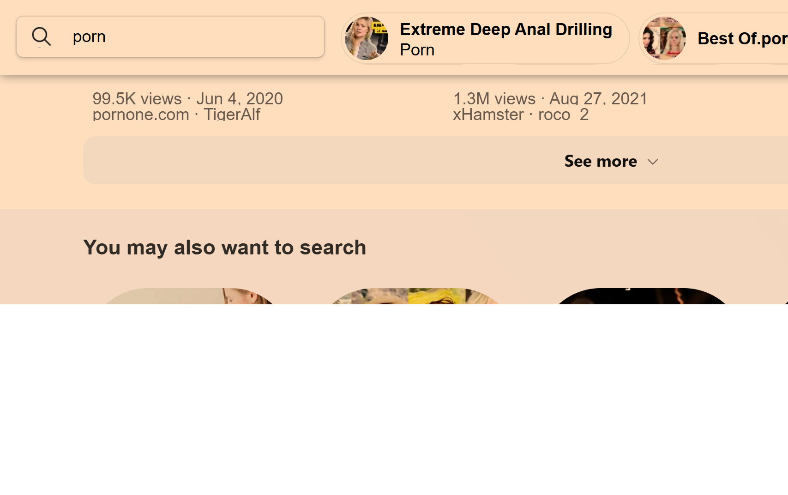
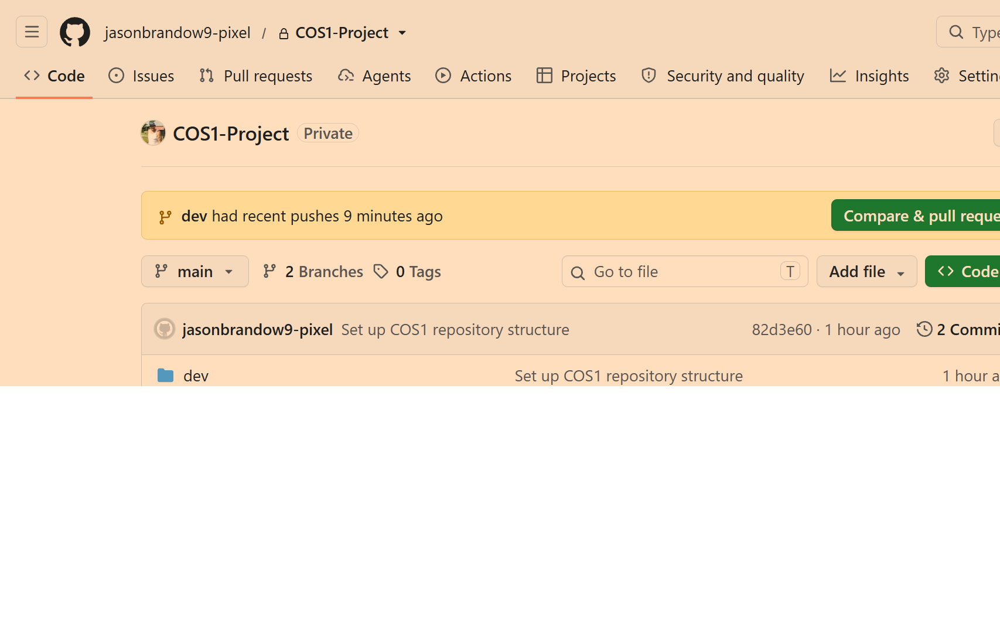

Watch each day unfold
Follow susceptible, infected, recovered, and new-infection counts alongside a live grid view.
COS1 · PROJECT & PORTFOLIO I
Virus Spread Lab is a C++ console simulation that makes the daily movement of a simplified outbreak easier to explore.
An educational model built with C++, Visual Studio, Git, and GitHub.
Illustrative states · the project runs in the console
THE PROJECT
The program places people on a grid and advances the simulation one day at a time. Users can run an outbreak, compare illustrative transmission profiles, and read how the model’s rules work.
This is a simplified classroom exercise, not medical advice, real-world data, or a clinical forecast.
Follow susceptible, infected, recovered, and new-infection counts alongside a live grid view.
Run three illustrative profiles with the same starting conditions and review the summaries.
Use the built-in help screen to explore transmission, recovery timing, and the model’s limits.
HOW IT IS ORGANIZED
BUILDING IN ITERATIONS
The project grew through small milestones, with each pass improving the program and its documentation.
WEEK 01
Created the Visual Studio solution, repository, and initial console feature.
WEEK 02
Added Quick Run, repeatable seeds, report export, and clearer input handling.
WEEK 03
Fixed a scope issue, strengthened numeric validation, and clarified profile access.
WEEK 04
Completed a final pass on simulation flow, usability, and project notes.


PROJECT NOTES
SOURCE & PROJECT HISTORY